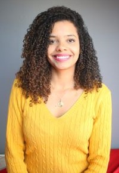

Maria Laísa Santana Freitas Dubiela | WDD 130
Hello, I am Laísa from Santos - Brazil and I am a mother, wife, civil engineer and student of programming. I am a civil engineer with experience in project management and construction execution, currently expanding my skills into the field of programming. I am passionate about creating practical solutions, which led me to develop Python tools for construction material calculations, such as plastering, coatings, and painting. When I'm not developing code or working on projects, I am a mother of two and deeply value the balance between professional and family life. Working from home and being present for my children's growth is one of my greatest personal achievements. My parents taught me the value of perseverance and dedication. Today, I am married to a wonderful lawyer, and together we are raising two beautiful children. Family is at the heart of everything I do, and one of my greatest joys is working from home, which allows me to be present for my children, Miguel and Luca. My background, both personally and professionally, reflects my strong values: dedication, love for family, and a commitment to continuous growth. These qualities drive me as I explore new paths, such as programming, while continuing my work in engineering.